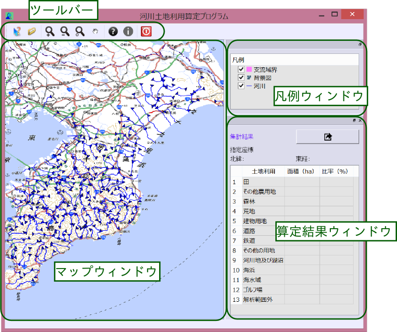

本ソフトウェアはWindows 7、Windows 8.1上で動作します。 必要なディスク領域は同梱されるデータによって異なりますが、プログラム本体およびライブラリが必要とする領域はデータを除くと160MB程度です。
本ソフトウェアのディレクトリ構成は以下のようになっています。
├─qgis : 実行ファイル │ ├─bin : プログラム本体およびコアライブラリ │ ├─plugins : QGISプロバイダプラグイン │ ├─qtplugins : Qtプラグイン ｜ └─resources : QGISが使用するデータ類 ├─data : データフォルダ ├─libs : 依存ライブラリ群 ├─share : プログラムが使用する各種データ類 └─qgis_lrs.bat : プログラム起動バッチファイル
本ソフトウェアにはインストーラは用意されていません。 インストールするにはファイル一式をシステム上の任意の場所にコピーしてください。 トップディレクトリにあるショートカットは、デスクトップなどの任意の場所にコピーしてお使いください。
インストールと同様にアンインストーラも用意されていません。 アンインストールをするにはファイル一式を削除してください。 ショートカットなどについても同様に削除してください。
ソフトウェアを起動するには、ショートカットをダブルクリックします。 起動には、参照レイヤーを読み込んだりするため多少時間がかかります。
ソフトウェアを終了するには、ツールバーから「終了」ボタンを選択します。
本プログラムのウィンドウは以下のような構成となっています。
